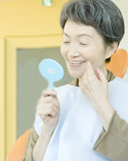

インプラントならアイデンタルクリニック トップページ > 当院の専門麻酔医について
セデーションとは、インプラント手術時の不安や恐怖感により緊張した状態を、薬剤を用いて和らげ、＜安心＞で＜快適＞なインプラント手術を受ける状態にする方法です。
セデーションでは全身麻酔と違い、完全に意識がなくなるのではなく、「うとうとし、指示には従え、軽く入眠しても呼びかけで目を覚ます」状態となります（日本歯科麻酔学会発行「静脈内鎮静法についての説明」より引用）。

セデーションは、インプラント手術中の安全性を飛躍的に高めます。
手術中の安全には、「精神面の安全」と「身体面の安全」のふたつがあります。
「精神面の安全」
インプラント手術に対しての恐怖心や苦痛を和らげ、快適にインプラント手術をお受け頂くことを意味します。
「身体面の安全」
インプラント手術中に何らかの身体の不具合（心拍数増加、血圧上昇、心電図異常など）が生じた場合でも、点滴していますので、安全、かつ適切な対応が可能です。
くわえて、手術後のお痛みや腫れへのケアとして、「痛み止め」や「腫れ止め」などを点滴投与することも可能です。
インプラント手術を受けられる方は、自覚のある無しに関わらず、何らかの全身疾患を合併されていることが多いものです。
同時に、インプラント手術は精神的な緊張を伴うことが多く、心臓や脳に負担がかかりやすい状態にあります。
つまり、「いかに患者様の緊張を和らげるか？」「手術中の患者様の全身状態を正確に把握するか？」が極めて重要です。
当院では全身麻酔１万症例以上の麻酔医が常駐し、生体モニターをつうじて患者さまの「手術中の安全」を守っております。
当院では『セデーション(静脈内鎮静法)』という、うたたねしているような気分で手術をお受け頂くことができる手技を用意しております。
実際に『セデーション』を実施された患者さまからは「気が付いたら手術が終わっていた」「やってよかった」と大変にご好評をいただいております。

当医院でインプラント手術を受けられる方のうち、既に半数以上の方にセデーションをご利用いただいております。インプラント4本以上の場合、96%の方がセデーションをご利用です。
※2009年10月～2009年12月の実績平均
| まず、心電図、血圧計などの計器や点滴の準備をします。 |
|---|
| 次に、患者様の状態を見ながら不安や緊張感がとれるように薬をゆっくりと注入していきます。 |
| そして不安や緊張がとれていると確認した段階で、インプラント手術が開始されます。治療中は麻酔医が「血圧、心電図、酸素飽和度」などをモニターで確認し、安心、快適な状態を維持します。 |
| 治療終了後は、患者様の状態を確認して、麻酔医が帰宅の許可を出します。 |
- 不安や恐怖心の強い方
- 長時間手術を受けられる方
- 基礎疾患（高血圧、糖尿病、その他）がある方
- 嘔吐反射の強い方
- 歯科治療の最中に気分が悪くなったことのある方
- 胎児に対する安全性が確立されていません。
- 全身状態により（使用する薬にアレルギーのある方や人工透析中の方など）お断りすることがあります。
- 受けた当日は車の運転や、重要な判断が必要とされる仕事は避けて下さい。

|  | |
|---|---|
 メールでのご相談はこちら メールでのご相談はこちら |